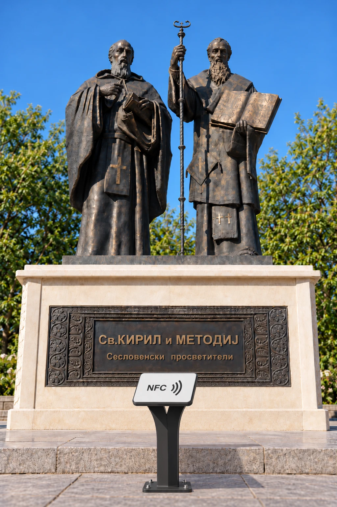
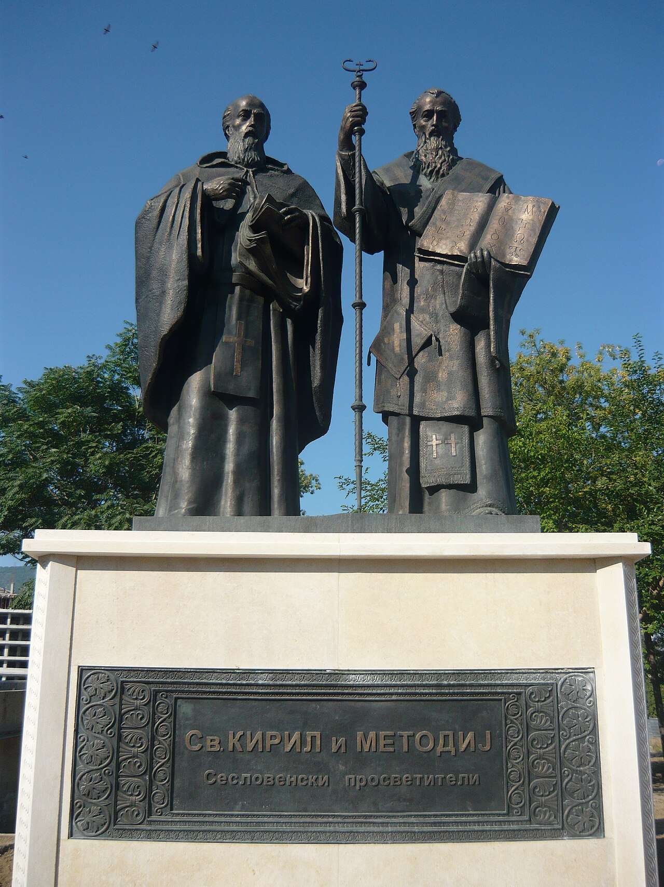

TapTales
Tap a statue. Hear its story.
In any city on Earth.

Tap a statue. Hear its story.
In any city on Earth.
Luka Manojlovski · FINKI · Innovations in ICT · 2026
1 · The problem
No plaque, or a plaque in a language they can't read. They photograph it, search, and walk on.
1 · Evidence claims, evidence and assumptions kept apart
2 · Alternatives novelty is relative to the best current option
| Alternative | Target user | What it does | Strength | Weakness | Our difference |
|---|---|---|---|---|---|
| Talking Statues Copenhagen 2013 · 11 cities | City visitors | NFC/QR plaque on ~35 chosen statues plays a recorded monologue | Physical, charming, proven in 11 cities | Hand-picked few; one language; no map, recognition, 3D or collection; project-based | Every statue of the city, generated from open data; seven languages |
| Smartify "Shazam for art" | Museum visitors | Photo recognition of artworks in partner venues | Millions of users; large catalogue | Only where the venue has uploaded its collection; indoors; needs a server and internet | On-device open model, outdoors, offline, no venue onboarding |
| GPS audio tours izi.TRAVEL, SmartGuide, VoiceMap | Self-guided tourists | Location-triggered audio for a route | Hundreds of cities | Paid; nothing physical at the statue; centre only; no 3D, no collection | Free for the visitor; the plaque is the trigger; whole city |
| Munzee, Geocaching | Players | Scan codes in the world to score | Collection mechanic works | Game only, no heritage content | Same motivation, real stories |
| Do nothing search on the phone | Everyone today | Type the name you can't read | Free, always there | 2–3 minutes, often wrong statue or wrong person | Answer in under five seconds, standing there |
| TapTales | City visitors; cities pay | Tap or photograph any statue → story, voice, 3D/AR, collection, map | Whole city from open data in weeks; no app to install | Plaques need a permit; prototype in one city | The combination, city-wide, generated for any city |
Sources: Talking Statues (talkingstatues.com, University of Leicester RCMG), Smartify (CORDIS 781928), app stores, Google Patents search Oct 2026.
2 · The innovation claim in one sentence
For city visitors who struggle to learn who a statue shows and why, TapTales differs from Talking Statues and Smartify by generating a complete guide for every statue of any city from open data, delivered by a physical tap or an on-device photo match, creating a city-wide guide in weeks instead of 35 hand-picked statues in years, free for the visitor and cheaper than a custom app for the city.
2 · Type and level of novelty
We claim the combination and the process, never the parts.
3 · The product
Story in your language, a voice, 3D you can place in front of you, and the statue joins your collection.

TapNFC plaque opens the statue, no app Listenvoice guide, seven languagesSee it in 3DAR for the headline statues
Listenvoice guide, seven languagesSee it in 3DAR for the headline statues
Collectonly a tap or a photo counts3 · Value baseline → target, measured in the pilot
For visitors: time and quality. For cities: cost, coverage and data they never had.
4 · Technical feasibility only the components that matter to novelty
where the novelty livesstandard componentsexternalHardest uncertainty: recognition accuracy outdoors in bad light, and whether the pipeline holds in cities with thin Wikidata coverage.
4 · Development stage, stated honestly
5 · Validation hypothesis · test · metric · decision
| We believe… | Test | Metric | Pass | If it fails |
|---|---|---|---|---|
| Visitors tap or scan when a plaque invites them | Operational: 40 plaques per pilot city, 3 months | Taps + scans per plaque per day; share of visitors who open a second statue | ≥ 5 / day on the headline statues; ≥ 40 % open a second | Redesign the plaque and placement; QR-first |
| Recognition works outdoors, on real phones | Technical: 600 field photos, day / dusk / rain, 3 cities | Top-1 accuracy; time to result | ≥ 90 %; < 2 s | Show three candidates for the visitor to confirm |
| The open-data pipeline generalises beyond Skopje | Benchmark: generate 10 cities on 4 continents, unsupervised | Share of statues with name, photo and a story source | ≥ 80 % in Europe, ≥ 60 % elsewhere | Add a city-editor mode for local volunteers |
| Cities will pay for onboarding + licence | Willingness to pay: offer to 10 cities and tourism boards with pilot data | Signed letters of interest; first licence | ≥ 3 LOIs, 1 licence by month 12 | Switch to sponsor-funded routes and heritage grants |
| Visitors find it worth it | Usability: 300 visitors, in-app survey + observation | Satisfaction; completion of a statue page | ≥ 4 / 5; ≥ 70 % finish the story | Shorten stories, voice first |
The cheapest test that answers each question. Every decision is continue, change or stop; a failed hypothesis is a result, not a failure of the project.
6 · Business model who uses, who pays, why they adopt
6 · Market size from assumptions traceability, not false precision
Vision
7 · Project plan objective → activity → output → evidence of completion
7 · Budget every euro serves an activity
85 / 15, cash-based, spent by quarter when the activity happens.
7 · Five-year forecast computed live from the assumptions on this slide
Risks each with a specific response
IP searched before we claimed
Google Patents, WIPO and product search, October 2026.
Team and the ask
€30,000 from the Fund turns a prototype in one city into a pilot in three countries and the first licence.

Every statue, every city, one tap.
Luka Manojlovski · Innovations in ICT · FINKI 2026
Photos from Wikimedia Commons, credited on each slide (Andrzej Wójtowicz, Mister No, Pudelek, Yemc; CC BY / CC BY-SA). Map: Natural Earth via world-atlas (public domain). Counts: taginfo.openstreetmap.org; UN Tourism World Tourism Barometer.